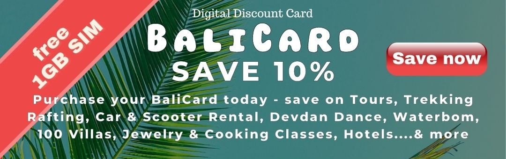

Your Reliable Travel Guide to
Bali
Save on Villas, Rafting, Car & Scooter Rental, Devdan Dance, Waterbom, Jewelry & Cooking Classes, Hotels, Trekking, Tours, Watersports….& more
FREE 1GB SIMCard included
Prices & DiscountsThere are a few Travel and Visa Regulations you need to be aware of. 90+ nationalities can obtain a simple 30days Visit Visa (Visa on Arrival) at the airport or now also online. ASEAN countries don't need a visa. All other travelers still need a Visitor Visa B211A (apply before arrival)
Travelers do NOT have to show proof of vaccination anymore! Please check Visa & Travel Regulations for details:
Visa & Imigration Regualtions Travel & Covid Regulations Digital Discount Card for Bali(NEW)
There is no other place like Bali in this world. A magical blend of culture, people, nature, activities, weather, culinary delights, nightlife, and beautiful accommodation. Bali is rated as one of the best travel destinations in the world by countless websites, review portals, and travel magazines each year – for very good reasons. Whatever your age, background, budget or interest, there is something great for everyone to explore and discover. And that’s a promise.
First time in Bali? 21 reasons why Bali is a paradise
On our website you will probably find more information about Bali, than in a printed Travel Guide Book. The sheer amount of things to do and places can be quite overwhelming. If you have not been to Bali yet and want to get a brief overview, then this little Travel FAQ will help you to start your travel planning.
Can I travel to Bali? Do I need a Visa? What are the travel requirements?
Yes, you can travel to Bali (Indonesia)
Click for updated TRAVEL regulationsTravelers from 90+ countries can now obtain a simple Visit Visa (also known as VISA ON ARRIVAL (VoA))
If your country is NOT on the VoA list or/and you intend to stay longer than 60 days, then you need to apply for B211A Visit Visa before your arrive.
Click for updated VISA regulationsWhat steps do I need to take to plan my perfect Bali holiday?
Bali is so diverse and like any foreign country there are often different rules and regulations to be aware of. These are the things we suggest you do:
Choose the season and best month for you to visit Bali - Weather Guide
Become aware of the different destinations and what they offer. Each region is very different (nature, climate, hotels, "crowds", prices, transportation facilities, suitable for families, etc) - Destination Guide
Get familiar a bit with the unique culture and customs - Culture Guide
Book hotels and Villas that are well located according to your needs. Always check the map and understand walking distance to beach, attractions, restaurants etc. What looks nearby might not be, and an hotel calling itself X Seminyak, might not be really in Seminyak - Book Hotels & Book Villas
Make a list of what you would like to do and experience. Bali offers hundreds of things to do, visit and explore and see how far these attractions and sites are away from your hotel location. Understanding how to get from A to B can make or break a holiday. Check out our Transportation Guide and plan beforehand - Transportation Guide
Rent a scooter if you can drive one, which would male it much more easy to get from A to B - Scooter Rental
Make sure you get online in Bali and get a Data package - SIM & e-SIM cards
Browse through our travel guide and find out more about Bali and how to get ready - Travel Guide
Last but not least: Get good deals and choose quality experiences - BaliCard Selection and Discounts on 100 villas, plenty of activities.
When are the best months to travel to Bali?
In general, best time to visit Bali is during the dry season, which runs from April to October. This is when the weather is sunny and dry with little chance of rain, making it ideal for a tropical holiday.
More about Bali Weather, Climate & SeasonsDo you offer discounts in Bali?
Discounts on Accommodation, Rafting, Canyoning, Cooking Classes, Jewelry Making Classes, Car Rentals with Driver, Motor Scooter Rentals, SIMCard and Data top-ups, Jetski, Trekking, Scuba, Tours, Escape Rooms... and more
Purchase your BaliCard here granting discounts for up to 5 people What are the best destinations to visit or stay in Bali?
In general one can say, that these destinations are the most popular and offer something for everyone.
Canggu & Berawa | Ubud | Seminyak | Sanur | Nusa Lembongan & Ceningan | Nusa Dua (more luxurious)
Check out our destination guide to get a clearer overview about what each destination and region in Bali is famous for and what you can expect there. Your holiday experience will depend greatly on choosing the right region and location that matches your preferences.How is the weather and climate in Bali?
How long should I stay in Bali?
If you visit Bali from further away than 6-8h by plane, a solid 2 or 3 weeks is what you should aim for, so you have some time to adjust a potential jetlag and also time to explore and then relax.
How much does a holiday cost in Bali?
Bali is a destination, that offers in general great value for money, whether you are traveling on a budget, or if you are the luxury traveler only seeking the best .
Accommodation USD 15-30 per room per night / a meal USD 2-4 / scooter rental per day USD 3-6
Accommodation USD 80-120 per room per night / a meal USD 6-10 / scooter rental per day USD 3-6 / Car Rental per day USD 35-45
Luxury Segment 5* (Bali-Lux)Accommodation USD 170-400 per room per night / a meal USD 12-20 / scooter rental per day USD 10-15 / Car Rental per day USD 60-100
Accommodation USD 400+ per room per night / a meal USD 30-60 / scooter rental per day USD 10-15 / Car Rental per day USD 60-100
Imported Wines & Spirits are rather expensive compared to most other countries, due to an additional taxed imposed. A cocktail in a nice bar will cost you around USD 8-12.
What are the top 10 reasons to come to Bali?
What are the top 5 places to visit or things to do in Bali?
Bali has literally hundreds of places to visit and things to do - many hidden treasures. If we would have to pick 5, then that's our list:
Pura Luhur Uluwatu Temple with Kecak Dance before Sunset, and on the way back fresh BBQ seafood dinner on the beach in Jimbaran.
Daytrip to the Rice Field Terraces (e.g. JatiLuwihand a stop at the temples Trota Empul or Goa Gaja, closing the day with a traditional Dance performance in Ubud with a dinner in one of the many amazing restaurants in Ubud
Hit one of the amazing Beach Clubs in Canggu, such as the FINNS Beach Club or La Brisa for the day, and if you are up for it, stay till after sunset, when some of the coolest DJs get to work their art.
Visit the Artist Villages of Mas or Celuk, and experience first hand how these masters are carving and creating the most amazing artworks.
The Mountains - Climb Mount Batur or if this is too difficult join for an e-bike tour through the villages and highlands of Bali.
Of course there is more, scuba diving, golfing, trekking, canyoning, rafting, the animal parks, countless temples and religious sites, hundreds of amazing restaurants, bars, and clubs...the list is endless... that's why so many travelers come back.
What's the best way to get around Bali?
I want to rent a scooter or Motorbike, what do I need?
What are the Balinese like?
What languages are spoken in Bali?
What's the best itinerary for 2 or 3 weeks holiday vacation in Bali?
How is the nightlife in bali?
Is Bali still a paradise?
Is Bali safe?
sd
sd
sd
sd
Our Top 199 Insider tips when coming to Bali